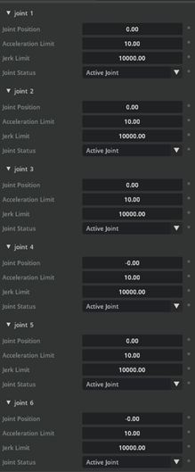
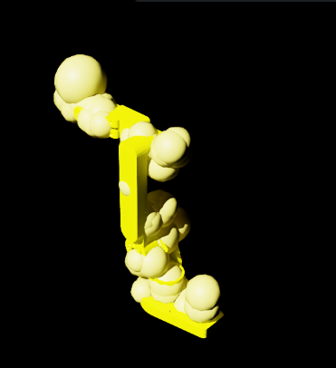
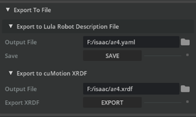

Isaac Sim Robot Configuration¶
Introduction¶
After importing the AR4 into Isaac Sim, the robot needs a configuration file before simulation. These configuration files describe the kinematic chain, joint limits, and collision geometry in a form the solvers understand.
This page goes through generating those files for the AR4 using the Lula Robot Description Editor built into Isaac Sim.
Prerequisites¶
-
The AR4
.usdfile has been imported into Isaac Sim. See USD Import in Isaac Sim if you have not done this yet. -
You have the AR4 URDF file on disk.
-
Articulation root path: /World/ar4_mk3_isaac.
Enable the Lula Extension¶
-
Go to Window → Extensions.
-
Type
Lulain the search box and find Isaac Sim Lula. -
If it does not appear, remove the
@featurefilter. -
Click ENABLE, then check AUTOLOAD so it persists across sessions.
Prepare the AR4 Asset for Lula¶
The Lula Robot Description Editor does not support instantiable meshes, so before opening the editor we need to flatten them.
-
Open the AR4 USD file in Isaac Sim.
-
In the Stage panel, search for
visualsand select all matching prims. -
In the Property panel, uncheck Instantiable.
-
Repeat for all
collisionsprims.
Configure Joints in the Lula Robot Description Editor¶
-
Press PLAY to start the simulation. Keep the simulation running for the rest of this page. Stopping it will reset the editor and you'll lose your work.
-
Open Tools → Lula Robot Description Editor.
-
In the Selection Panel, select the AR4 articulation (
/World/ar4_mk3_isaac). -
Scroll to the Set Joint Properties section.
-
For each joint, set Joint Status as follows:
Joint Joint Status Notes joint_1…joint_6Active Joint The 6 revolute arm joints driven by the motion solver. Gripper joint(s) Fixed Joint Gripper is controlled separately, so Lula treats it as rigid during planning. -
Leave the other settings (Joint Position, Acceleration Limit, Jerk Limit) at their defaults unless you have a specific reason to change them.
-
Here is Joint Properties panel. All six AR4 arm joints are set to Active Joint with default acceleration and jerk limits.

-
Generate Collision Spheres¶
-
Scroll to the Link Sphere Editor section.
-
In Selection Panel → Select link, pick a link (start with
base_link, then move down the chain). -
In Generate Spheres → Select Mesh, choose their collision mesh, e.g.
/collisions/base_link/mesh. -
Set Radius Offset to
0.03. This pads the sphere radius slightly beyond the mesh to give the solver a safety margin. -
Set Number of Spheres to
8. -
Confirm the spheres appear in red on the link in the viewport.
-
Click Generate Spheres. The spheres turn yellow to confirm they're committed.
-
Repeat for all six AR4 arm links plus any gripper links you want considered for collision.

Export the Configuration Files¶
-
Export the Lula Robot Description (YAML)
-
Scroll to the Export To File section at the bottom of the editor.
-
Expand Export to Lula Robot Description File.
-
Click the file icon and save as
ar4.yamlsomewhere your project can find it. -
Click Save.

-
-
Export the cuMotion XRDF.
-
In the same Export To File section, expand Export to cuMotion XRDF.
-
Save as
ar4.xrdf.
-
-
Stop the simulation
What You Now Have¶
After this page you should have:
```
ar4_workspace/
├── ar4.urdf # from the URDF transfer step
├── ar4.usd # from the USD import step
├── ar4.yaml # Lula Robot Description
└── ar4.xrdf # cuMotion XRDF
```